Menu: DOCUMENTO (o título da tela é "DOCUMENTO") · Situação do manual: Em ajuste · Fonte dos prints: versão nova.
Para que serve
É a primeira etapa do ciclo de vida de um documento controlado (POP, norma interna, instrução). Nesta tela quem elabora o documento cria o cadastro, anexa o arquivo de trabalho, escolhe os setores que vão revisar (e a ordem), os setores onde o documento vai valer (aplicações) e assina e submete o documento para a análise crítica. A mesma tela lista todos os documentos do módulo, em qualquer situação, e permite pesquisar, imprimir a lista e excluir o documento que ainda está "em inclusão".
Depois de submetido, o documento segue para Revisão Documento, depois Pré-Aprovação Documento, Aprovação Documento e Vigência Documento (os manuais 02 a 05 desta pasta).
Antes de começar (o que precisa existir)
| O que precisa existir | Para quê | Onde se cadastra |
|---|---|---|
| Tipo de documento ativo | Campo "Tipo Documento" é obrigatório e define código automático e exigência de treinamento | Tabelas de apoio > Tipo de documento (tela provisória; hoje só existem os tipos já cadastrados) |
| Setores (áreas) | "Setor Responsável", "Setores Revisores" e "Aplicação" | Cadastros > Estrutura funcional |
| Arquivo de trabalho | O envio exige um anexo | Seu computador |
| Função Documento no perfil | Sem ela o servidor recusa a criação (403) | Administração > Perfil |
| Usuário e senha da própria pessoa | A assinatura pede usuário e senha | Conta do usuário |
Atenção (DV-DOC-N-001, Alta): no ambiente de teste, só o administrador de teste conseguiu adicionar setor revisor, aplicação e anexo e ler o histórico do documento; os perfis de papel (inclusive um com as 76 funções do módulo) receberam 403 nessas chamadas. O restante deste manual descreve o caminho feito pelo administrador de teste.
Passo a passo
- Abrir a lista. No menu DOCUMENTO, clique em Documento. A tela mostra o quadro Pesquisa com Tipo Documento (TODAS), Código, Revisão, Situação (TODAS), Título, Setor Responsável (TODAS), Data de Validade e Data de Emissão (cada uma com "de" e "até"), os botões PESQUISAR, LIMPAR e IMPRIMIR e o atalho Incluir.
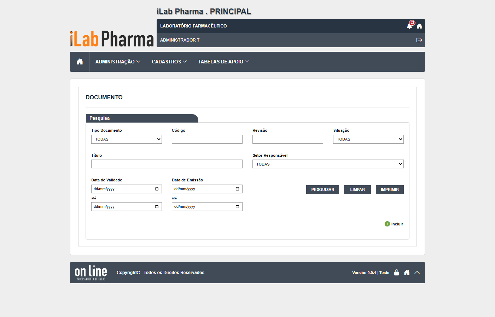
A imagem mostra a tela recém-aberta, com os filtros e o botão Incluir à direita, ainda sem lista.
- Pesquisar. Preencha o que quiser e clique em PESQUISAR. A lista traz as colunas TIPO, CÓDIGO, REVISÃO, TÍTULO, SETOR RESPONSÁVEL, SITUAÇÃO, DATA EMISSÃO, DATA VALIDADE e A VENCER (dias), mais dois ícones de ação por linha, e fica paginada com Anterior e Próxima.
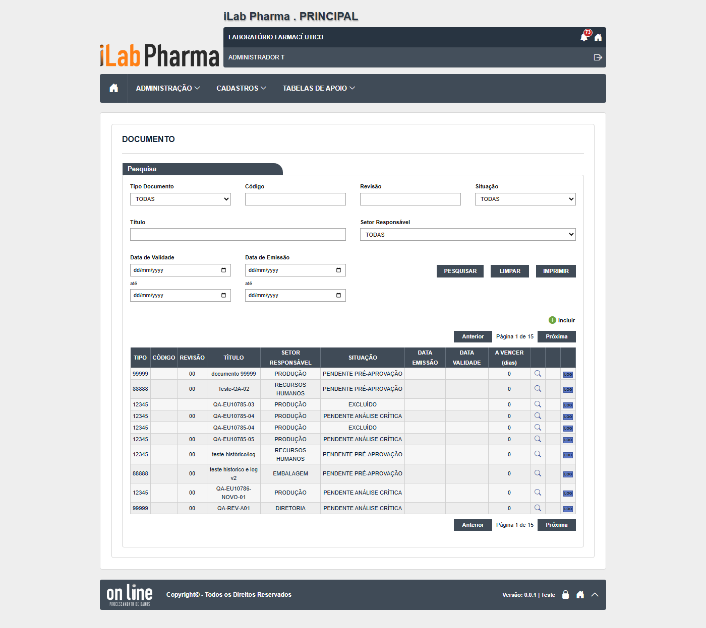
A imagem mostra a lista sem filtro (a barra de página indica "Página 1 de 15"), com documentos em PENDENTE PRÉ-APROVAÇÃO, PENDENTE ANÁLISE CRÍTICA e EXCLUÍDO, e os botões PESQUISAR, LIMPAR e IMPRIMIR.
O filtro Situação tem uma opção por situação (inclusive VIGENTE e CANCELADO; nenhuma tela testada cancela documento). Exemplo com a situação VIGENTE:
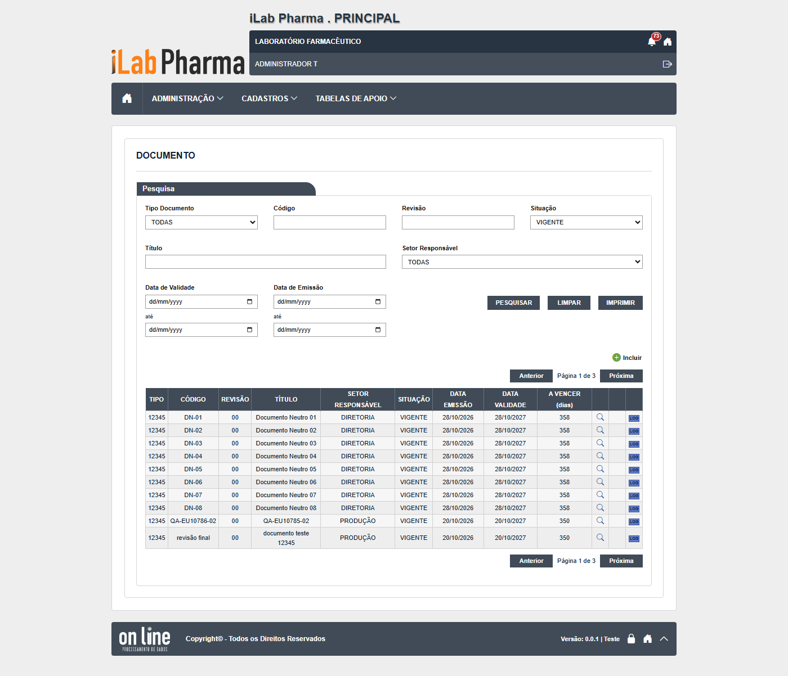
A imagem mostra o filtro Situação em VIGENTE e a lista só com documentos vigentes ("Página 1 de 3").
- Incluir. Clique em Incluir. Abre o quadro Inclusão com Tipo Documento*, Código e Revisão (bloqueados), Situação (bloqueada, "EM INCLUSÃO"), Título*, Setor Responsável*, Data de Emissão e Data de Validade (bloqueadas) e os botões VOLTAR e SALVAR.
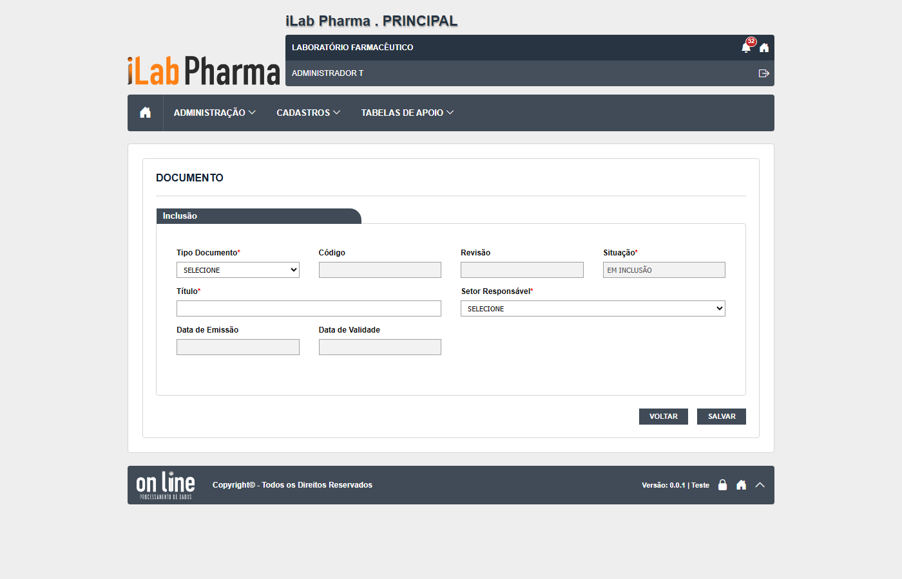
A imagem mostra o formulário de inclusão vazio, com "SELECIONE" nas duas listas e a Situação "EM INCLUSÃO".
- Salvar vazio (para conhecer as mensagens). Clique em SALVAR sem preencher. A tela mostra, numa faixa vermelha, as três mensagens juntas.
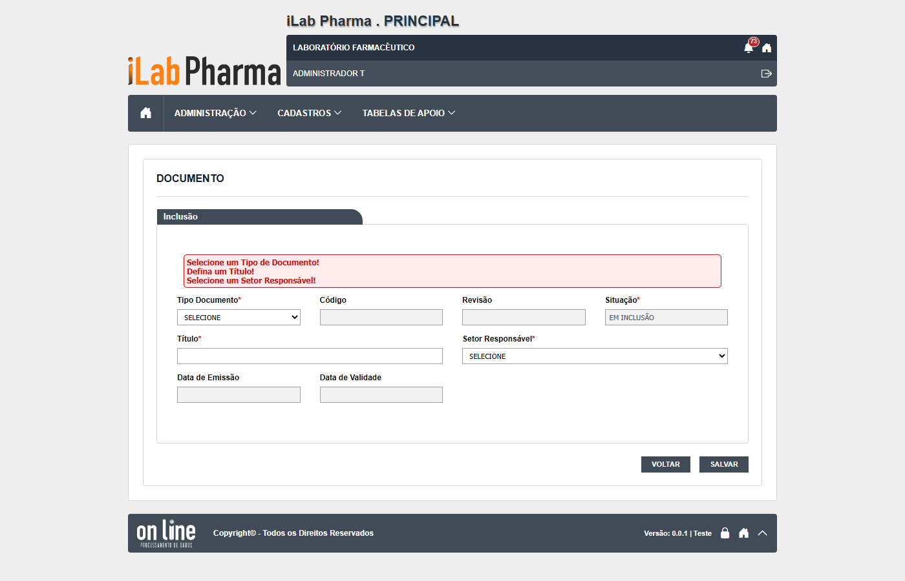
A imagem mostra a faixa vermelha com "Selecione um Tipo de Documento!", "Defina um Título!" e "Selecione um Setor Responsável!".
- Preencher e salvar. Escolha o Tipo Documento, escreva o Título (até 300 caracteres; o 301º não entra) e escolha o Setor Responsável. Clique em SALVAR; o sistema pergunta "Confirma a inclusão do documento?". Clique em SIM.
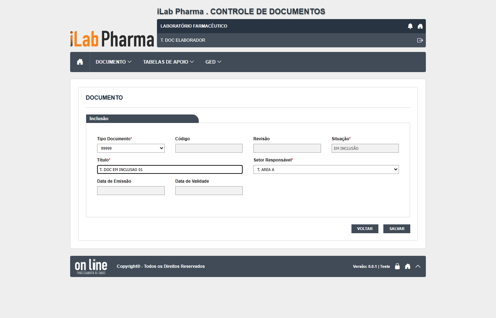
A imagem mostra o formulário com o tipo 99999, o título preenchido e o setor responsável escolhido, pronto para salvar.
- Cadastro de edição. Depois de gravar, o sistema abre o cadastro de edição, com a situação PRÉ INCLUSÃO e sem código (ele só sai na aprovação). A tela passa a ter os quadros Setores Revisores, Equipamentos (tags), Aplicação, Documentos Referência, Documento Anexo, Histórico e Justificativa.
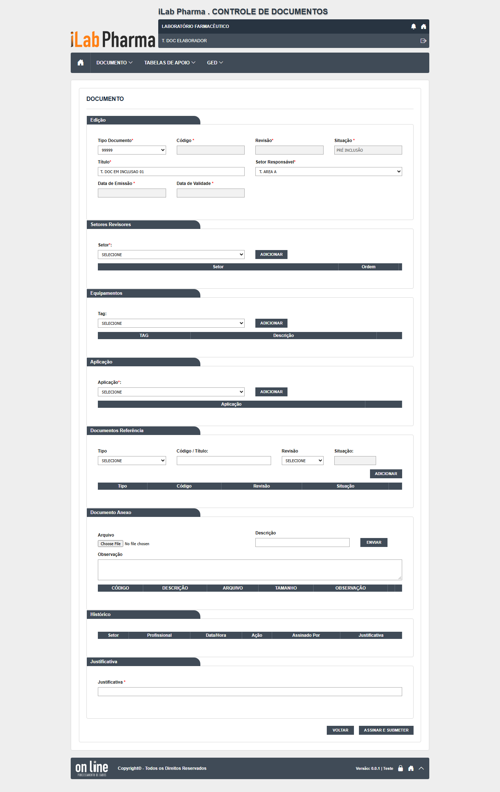
A imagem mostra a tela de edição inteira, com todos os quadros ainda vazios.
- Anexar o arquivo de trabalho. No quadro Documento Anexo, escolha o arquivo, preencha a descrição (se quiser) e clique em ENVIAR. Aparece "Arquivo enviado com sucesso." O sistema aceita um anexo; o segundo é recusado (ver "O que o sistema recusa").
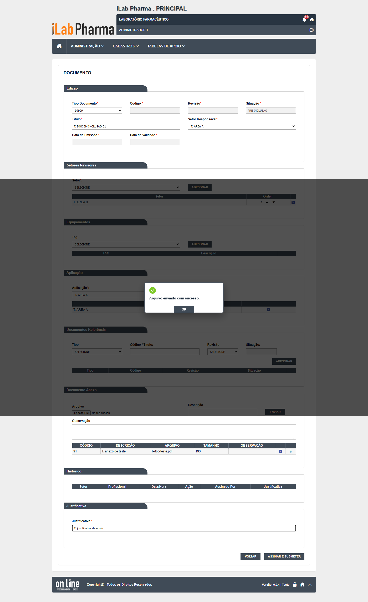
A imagem mostra a edição com a caixa "Arquivo enviado com sucesso." sobre a tela e o anexo já na tabela do quadro Documento Anexo.
-
Setores revisores e aplicação. Em Setores Revisores, escolha o setor e clique em ADICIONAR; a ordem aparece na tabela (setas para subir e descer). Em Aplicação, escolha o setor onde o documento vai valer e clique em ADICIONAR (a opção "todos os setores" é do legado: do legado; a confirmar na versão nova). Tags (Equipamentos) e Documentos Referência são opcionais.
-
Justificativa e envio. Escreva a Justificativa ao pé da tela e clique em ASSINAR E SUBMETER.
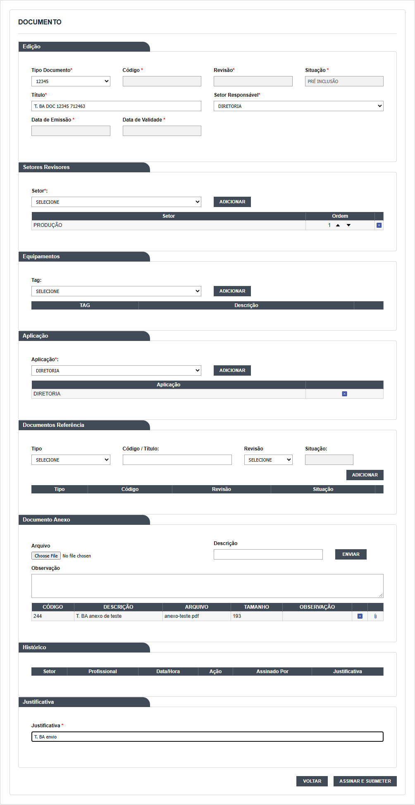
A imagem mostra o documento 12345 em "PRÉ INCLUSÃO" com setor revisor PRODUÇÃO (ordem 1), aplicação DIRETORIA, um anexo na tabela, a justificativa preenchida e os botões VOLTAR e ASSINAR E SUBMETER.
-
Confirmar. O sistema pergunta "Confirma a alteração do documento?". Clique em SIM.
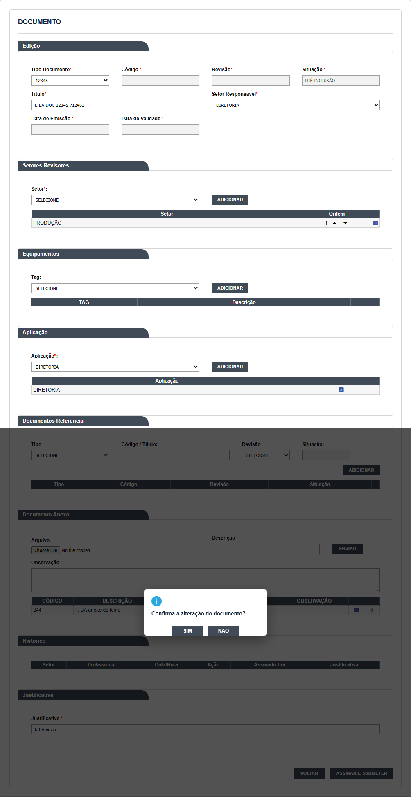
Confirmação · clique para ampliar A imagem mostra a caixa "Confirma a alteração do documento?" com SIM e NÃO sobre o formulário.
-
Autenticar. Na janela Autenticação, digite o seu usuário e a sua senha e clique em AUTENTICAR.
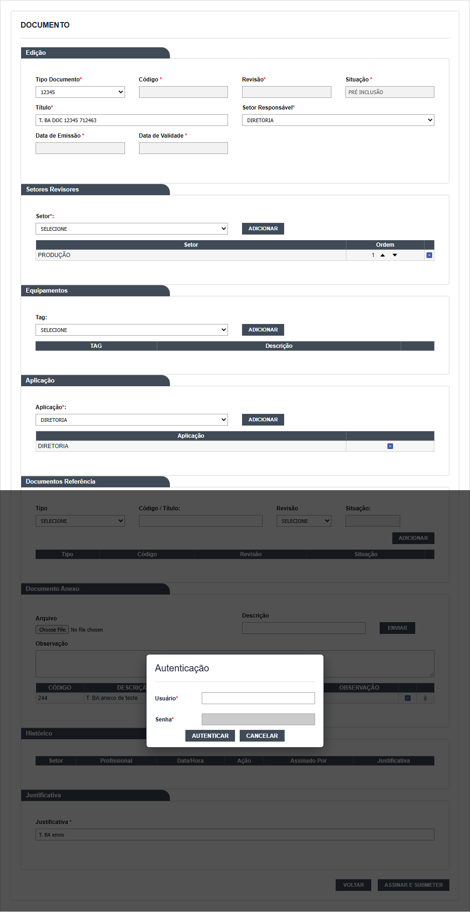
Caixa de autenticação · clique para ampliar A imagem mostra a janela "Autenticação" com os campos Usuário e Senha vazios e os botões AUTENTICAR e CANCELAR.
-
Sucesso. O sistema mostra "Inclusão efetuada com sucesso." e a situação do documento passa a PENDENTE ANÁLISE CRÍTICA.
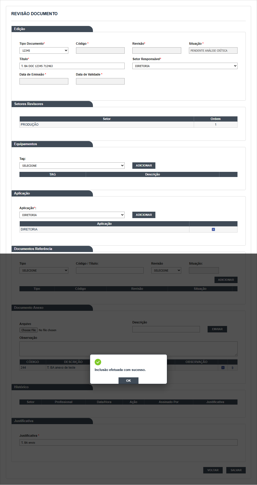
Mensagem de sucesso do envio · clique para ampliar A imagem mostra a caixa "Inclusão efetuada com sucesso." e, atrás, a Situação já em "PENDENTE ANÁLISE CRÍTICA".
-
Excluir (só em inclusão). Na lista, o ícone de excluir só aparece enquanto o documento está em inclusão (do legado; a confirmar a regra na versão nova). Ele abre a tela "Exclusão", com os dados do documento e os botões VOLTAR e EXCLUIR; o sistema pergunta "Confirma a exclusão do documento?", pede a justificativa ("Informe a justificativa") e responde "Exclusão efetuada com sucesso."; a situação vira EXCLUÍDO.
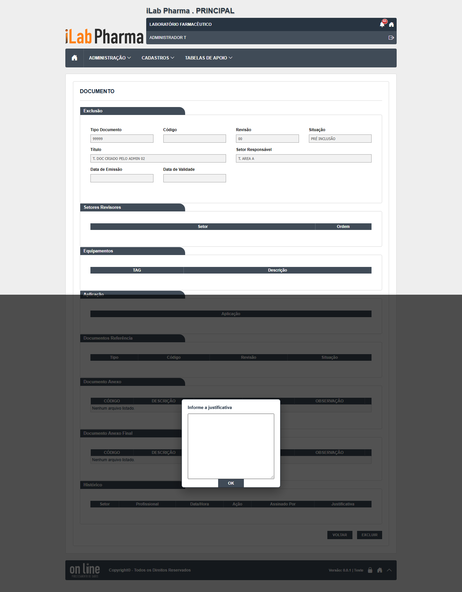
Tela de exclusão · clique para ampliar A imagem mostra o quadro "Exclusão" com um documento em "PRÉ INCLUSÃO" (todos os quadros vazios) e o botão EXCLUIR no pé.
-
Imprimir. IMPRIMIR gera o PDF da lista (a lista mestra) numa nova aba, depois de alguns segundos e sem indicador de espera. Corrige o DV-DOC-015 do legado.
Ícones e botões da lista
| Ícone ou botão | O que faz |
|---|---|
| Lupa (primeiro ícone da linha) | Abrir o documento para consulta (do legado: "visualizar"; a confirmar na versão nova) |
| Segundo ícone azul da linha | Histórico do documento (do legado; a confirmar na versão nova) |
| Editar / Excluir | Só em documento em inclusão (do legado; a confirmar; não aparecem nas imagens disponíveis) |
| PESQUISAR / LIMPAR | Filtra a lista (10 por página) ou limpa os filtros |
| IMPRIMIR | Gera o PDF da lista (função IMPRIMIR / EXCEL) |
| Incluir | Abre o formulário de inclusão (função Incluir) |
| Anterior / Próxima | Troca a página da lista |
Botões e ações
| Botão | Quando aparece | O que faz |
|---|---|---|
| SALVAR (inclusão) | Sempre | Confere os três campos, pede confirmação e grava |
| VOLTAR | Sempre | Volta para a lista |
| ADICIONAR (setor, aplicação, tag, referência) | Na edição | Inclui o item na tabela do quadro |
| ENVIAR (anexo) | Na edição | Envia o arquivo |
| ASSINAR E SUBMETER | Na edição | Confere, pede a senha, grava e envia para a análise crítica |
| EXCLUIR | Tela "Exclusão" | Pede confirmação e justificativa e marca como EXCLUÍDO |
| IMPRIMIR | Lista | Gera o PDF da lista |
Mensagens do sistema
| Mensagem | Quando aparece |
|---|---|
| Confirma a inclusão do documento? | Ao salvar o cadastro novo |
| Confirma a alteração do documento? | Antes da autenticação do envio |
| Inclusão efetuada com sucesso. | Envio concluído |
| Arquivo enviado com sucesso. | Anexo gravado |
| Confirma a exclusão do documento? / Informe a justificativa / Exclusão efetuada com sucesso. | Exclusão |
| Ocorreu um erro inesperado. | Falha ou 403 do servidor (DV-DOC-N-001) |